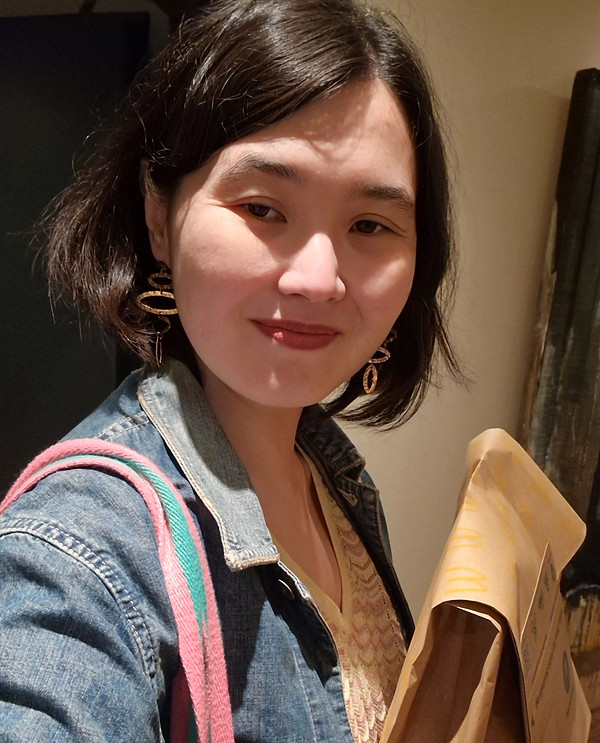

Private inquiries, public findings · Astana · MMXXVI
Meaning-making in authoritarianism. Social science with AI, not just about it. Rigor, wonder, and an exploration of a wrong kind of object.

Pl. I — Berlin, 2025
Substack · May 21
How UAP and AI both break positivist science the same way
Read on Substack ↗Substack · May 22
Why we probably can't teach AI: it's too weird and relational
Read on Substack ↗Right now